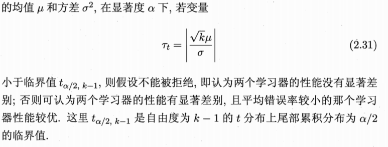

2.1 经验误差与过拟合
错误率，精度
训练误差，泛化误差
过拟合，欠拟合
过拟合是无法避免的，我们只能尽量缓解
模型选择
2.2 评估方法
通过测试集上的测试误差作为泛化误差的近似，测试集应尽可能与训练集相斥
2.2.1 留出法
留出法(hold-out)将数据集 \(D \) 划分为两个互斥的集合，一个作为训练集 \(S \)，一个作为测试集\(T \)
训练/测试集的划分要尽可能保证数据分布的一致性，保留类别比例的采样方式：分层采样(stratified sampling)
2.2.2 交叉验证法
交叉验证法(cross validation)
k折交叉验证(k-fold cross validation),p次k折交叉验证
留一法(Leave-One-Out)
2.2.3 自助法
自助法(bootstrapping)以自助采样(bootstrap sampling)为基础
通过boot strap,数据集中约有36.8%的样本未出现在采样数据集中，实际评估的模型和期望评估的模型都使用m个训练样本，而我们仍有约\( \frac{1}{3} \)的没在训练集中出现的样本用于测试，我们称之为包外估计(out-of-bag estimate)
boot strap在数据集较小，难以有效划分训练数据和测试数据时很有用，但它改变了初始数据集的分布，会引入估计误差
2.2.4 调参与最终模型
除了要对学习算法进行选择，还需要对算法参数进行设定(parameter tuning)
参数有两种：1.算法的参数（超参数）2.模型的参数
验证集(validation set)：用验证集来进行模型选择和调参
2.3 性能度量
回归函数常用的性能度量是均方误差(mean squared error),这与最大似然是一致的
2.3.1 错误率与精度
错误率和精度是分类任务中最常用的两种性能度量
2.3.2 查准率，查全率与F1
真正例TP,假正例FP,真反例TN,假反例FN
查准率 \(P= \frac{TP}{TP+FP}\)
查全率 \(R= \frac{TP}{TP+FN} \)
一般来说，查准率高时查全率往往偏低
F1度量：\(F1=\frac{2 \times P \times R}{P+R} = \frac{2\times TP}{样例总数+TP-TN}\)
\(F_{\beta}=\frac{(1+{\beta}^2) \times P \times R}{({\beta}^2 \times P)+R} \),\(\beta > 1 \)时查全率有更大的影响，\(\beta<1 \)时查准率有更大影响
2.3.3 ROC与AOC
很多学习器是对测试样本产生一个实值或概率预测，然后将其与一个分类阈值(threshold)比较，若大于阈值则分为正类，反之反类
以某个cut point将样本分成两部分，前一部分判作正例，后一部分判作反例
ROC(Receiver operating Characteristic)曲线：纵轴是真正率(TPR),横轴是假正率(FPR)
\(TPR=\frac{TP}{TP+FN} \)
\(FPR= \frac{FP}{FP+TN} \)
AUC(Area Under ROC Curve):对ROC曲线下各部分的面积求和而得
\(AUC = \frac{1}{2} \sum_{i=1}^{m-1}(x_{i+1}-x_{i})(y_i+y_{i+1})\)
2.3.4 代价敏感错误率与代价曲线
非均等代价(unequal cost)
代价敏感(cost-sensitive)错误率：
$E(f;D;cost)=\frac{1}{m}\left(\sum_{x_i \in D^+} I(f({\bf{x_i}} \neq y_i) \times cost_{01}+\sum_{x_i \in D^-} I(f({\bf{x_i}} \neq y_i) \times cost_{10} \right)$
代价曲线(cost curve)
2.4 比较检验
统计假设检验(hypothesis test)为我们进行学习器的性能比较提供了重要依据
基于假设检验我们可以推断出。若在测试集上观察到学习器A比学习器B好，则A的泛化性能是否在统计意义上优于B
2.4.1 假设检验
假设泛化错误率 \(\epsilon \) 与测试错误率 \(\hat{\epsilon} \) 相等
泛化错误率 \(\epsilon \) 被测得测试错误率 为 \(\hat{\epsilon} \) 的概率：
$$P(\hat{\epsilon} \ ; \epsilon )=\begin{pmatrix}m \\ \hat{\epsilon} \times m \end{pmatrix} \epsilon^{\hat{\epsilon} \times m}(1-\epsilon^{m-\hat{\epsilon \times m}})$$
$$\frac{\partial P(\hat{\epsilon} \ ; \epsilon )}{\partial \epsilon} = 0 \implies P(\hat{\epsilon} \ ; \epsilon )在 \epsilon = \hat{\epsilon}时最大$$
2.4.2 交叉验证t检验
对两个学习器A和B,k折交叉验证“成对t检验”来比较检验,若他们的性能相同，则他们使用相同的训练集/测试集得到的测试错误率应相同:\(\epsilon_i^{A}=\epsilon_i^{B} \)
\(\delta_i = \epsilon_i^{A}-\epsilon_i^{B}\),可根据 \(\delta_1,\delta_2,…\delta_k \)来对学习器A和学习器B性能相同这个假设做t检验

2.4.3 McNemar检验
列连表：
若两个学习器性能相同，则应有\(e_{01} = e_{10} \),那么 \(|e_{01} - e_{10}| \)应服从正态分布
McNemar检验考虑变量：
$$\tau_{\mathcal{x^2}} = \frac{(|e_{01} - e_{10}|-1)^2}{e_{01}+e_{10}}$$
服从自由度为1的 \(\mathcal{X^2} \) 分布
2.4.4 Friedman 检验与 Nemenyi 后续检验
在一组数据集上对多个算法进行比较
若所有算法性能相同这个假设被拒绝，则需要进行后续检验来进一步区分算法：Nemenyi 后续检验
2.5 偏差与方差
偏差-方差分解(bias-variance decomposition)是解释学习算法泛化性能的重要工具
对测试样本 \( \vec{x} , y_D为 \vec{x} 在数据集中的标记，y 为 \vec{x} 的真实标记，f(\vec{x};D)为训练集D上学的模型f在\vec{x}的预测输出 \) (有可能出现噪声使得 \(y_D \neq y \))
偏差度量了算法的期望预测和真实结果的偏离程度，即算法本身的拟合能力；方差度量了训练集的变动导致的学习性能的变化，即刻画了数据扰动造成的影响；噪声刻画了学习问题本身的难度；
泛化性能由学习算法的能力，数据的充分性以及学习任务本身的难度共同决定
偏差-方差窘境(bias-variance dilemma):